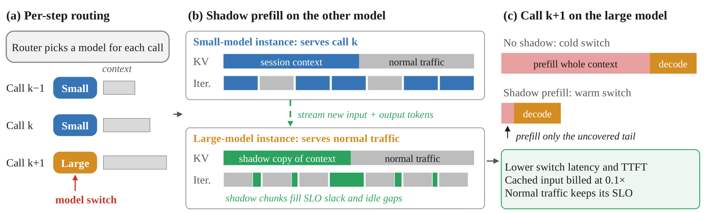
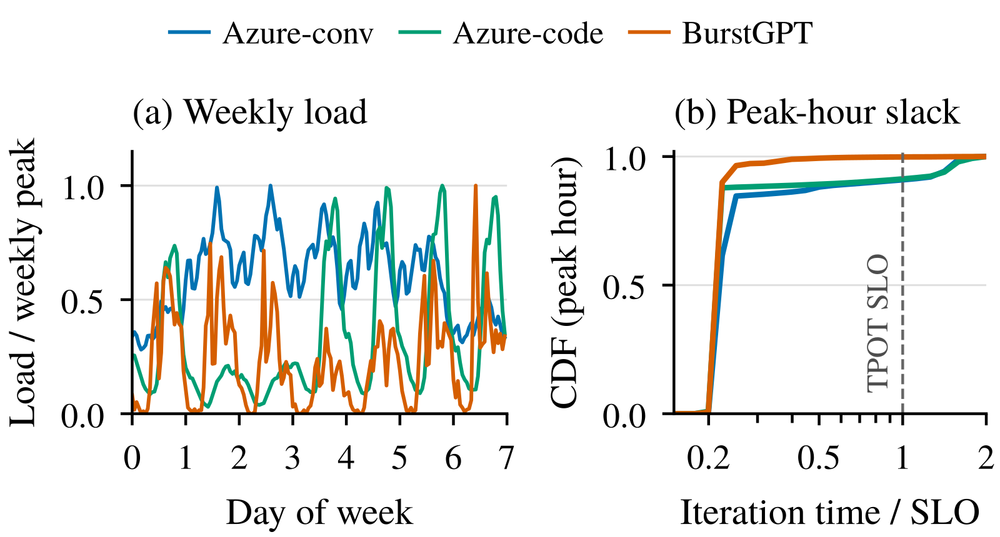
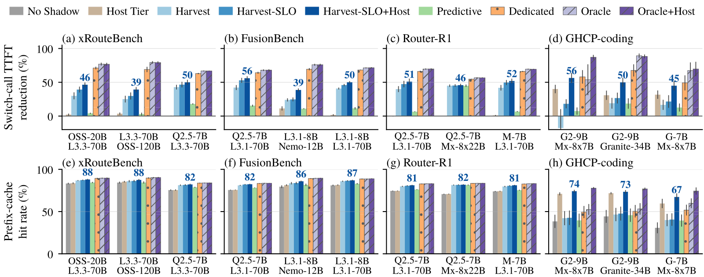
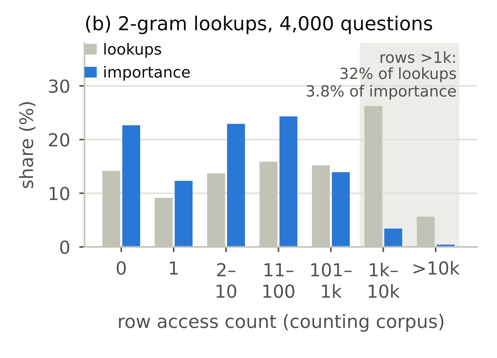

Contents · 6 sections
1The idle capacity hides inside each decode iteration2A shadow job tracks two things: what is held, what is missing3How many shadow tokens fit in one iteration4A 63K shadow copy does not fit in a small model's memory5Switch-call TTFT drops by about 45%6When the gain shrinksSHARE
ShadowPrefill tackles a cost of per-step routing: every model switch makes the new model prefill the session context again. Its fix is to compute whatever part of that context it can ahead of time, in the gaps left while the other model serves normal traffic; whatever is not done yet is still prefilled by the switch call itself.
An agent today makes dozens of LLM calls per task: plan, call a tool, read the result, edit code, run tests. These calls vary widely in difficulty, which is why per-step routers exist: when each call arrives, the router picks either a cheap small model S or a capable large model L. The router used in the paper, LLMRouter, is 6.6–13.6 points more accurate when switching between two models than always using the large one, and it spends fewer tokens. This says per-step routing pays off on its own, so it is worth optimizing for on the serving side.
The trouble is the KV cache. Every agent call resends the whole session history, followed by new tool output. While a session stays on one model, the prefix cache means a new call only prefills the few thousand new tokens, and providers bill cached input at about a tenth of the price. But KV is computed from the model's weights, so KV computed by S is useless to L. Once the router switches, L holds either nothing for this session or a stale copy from the last time it served it, and the gap must be prefilled before the first token appears.
Illustration: a coding-agent session has run its recent calls on S, and its context has grown to 60K tokens; the last time L served this session the context was 40K. At call k+1 the router switches to L, and L must first prefill the missing 20K plus the new input. The paper measures the cost: same-model calls hit 80–89% of their tokens in the prefix cache (token-weighted), switch calls only 44–65%, and a switch call takes 1.5–3.2 times as long as a same-model call, mostly in time to first token (TTFT). On a real GitHub Copilot coding-agent trace, the average switch call carries 63K tokens.
Existing approaches do not fit this example well. One kind is a switch-aware router: seeing a 60K context, it tends not to switch, and gives up the higher accuracy L would have had on this step. The other kind is single-model cache warming: send these 60K tokens to L as an ordinary request so they are computed in advance. But L's instances are already serving other users, and jumping in at normal priority slows everyone on L; the paper measures that this approach (Eager, below) slows LLM calls by 7.0% overall on the routing benchmarks.

The idle capacity hides inside each decode iteration
Computing KV in advance needs compute, and switches are most expensive exactly at peak load. The authors first replay a week of Azure inference traces: with the cluster provisioned for peak, instances serving code traffic are fully idle 72% of the median hour but only 8% of the peak hour, and conversation traffic leaves no whole-instance idle time in any window. Waiting for a whole machine to go idle leaves almost nothing to use at peak.
At a finer grain there is still room. A continuous-batching iteration is mostly decode, which is memory-bound and runs far faster than the per-token latency limit (the TPOT SLO). At the peak hour, the median iteration uses about a quarter of the TPOT budget, and 69–79% of the per-iteration latency budget goes unused. Adding a prefill chunk to such an iteration slows every decode in it a little, but as long as the whole iteration stays within the remaining slack of every request in the batch, no request misses its SLO.

This slack is what ShadowPrefill harvests: the large-model instance keeps serving normal traffic and only lends the unused latency budget of each iteration to shadow prefill.
A shadow job tracks two things: what is held, what is missing
ShadowPrefill sits between the router and the two models' serving engines. For every routed call it creates or extends a shadow job on the model the router did not choose; the job maintains a KV copy of the session on that model. Continuing the illustration, while call k runs on S, the shadow job on L looks roughly like this:
session: s42 target model: L instance: L's sticky instance L#2
covered prefix: tokens 0-40K missing: tokens 40K-60K (history gap)
+ 1K (call k's new input, appended on arrival)
+ 300 (S's output, appended once S finishes)
ordering key: predicted switch probability 0.3Why make it incremental instead of recomputing the whole history each time? Because sessions switch back and forth. When S switches to L, back to S, then to L again, the prefix L already holds need not be recomputed; the shadow job only fills the delta. The current call's output is appended to the shadow job only after S finishes generating it, so when the switch at call k+1 arrives, the shadow copy still lacks at least call k's output. The switch call prefills that tail and the new input itself. Hoot says

- Cold switch (illustrative): L holds only 0–40K and must prefill the 20K gap + 1K input + 0.3K output + 1K new input = 22.3K tokens.
- With the shadow (illustrative): 0–61K is already cached on L, so the switch call prefills only 0.3K output + 1K new input = 1.3K tokens.
- Why it need not catch up between calls: output joins the list immediately, but computing it waits behind every request and uses only slack; the paper conservatively states the shadow trails by at least the current call's output, so that tail is charged to the switch call.
Illustrative numbers follow the article's 60K session; the 1K new input of call k+1 is illustrative too. In the paper, S's output tokens are streamed to the shadow job as they are generated (output streaming); computing them runs only in L's iteration slack at the lowest priority, and the paper states that the shadow trails by at least the current call's output.
Source
paper §3.1 Incremental shadow jobs (input appended on arrival, output streamed, shadow trails by at least the current call's output, switch call prefills the tail); §3.2 shadow chunks have the lowest priority; Figure 1(b)(c)The shadow job runs on L's sticky instance, the instance this session always uses on L. The router picks instances by estimated prefill completion time counting only uncached tokens, so a switch call usually lands on the instance that holds its shadow copy. When several shadow jobs are queued, they are ordered by switch probability estimated from past sessions, so the sessions most likely to switch are computed first.
How many shadow tokens fit in one iteration
Shadow chunks have the lowest priority: the engine adds shadow tokens to an iteration only when the waiting queue is empty and no request is blocked for lack of memory. When an instance is fully idle it runs shadow-only iterations, each at most 0.5 times the TPOT SLO, so a newly arriving request waits at most one such iteration.
At peak it uses the SLO-slack controller. The controller sees only what a production scheduler already has: arrival times, first-token times, and how many iterations a request has run. A decoding request that is ahead of its SLO has slack to lend; a request near its deadline pushes the budget down. The iteration budget is the smallest slack in the batch, and a latency model then computes how many shadow tokens still fit.
The SLO here is measured on cumulative progress: with TPOT SLO T and safety margin m, a request that has completed k iterations since its first token meets the SLO as long as the total time is at most (1−m)·T·k. So a request that is ahead has built up slack, and its next iteration may be longer. At the same time, any iteration carrying shadow work is capped at β·T, with β=0.5.
Illustration: T=25 ms and m=0.2, so each iteration is allotted 20 ms and the cap β·T is 12.5 ms. The batch holds two decoding requests, each with 10 iterations done. Request A has used only 100 ms, so its 11th iteration could last 220−100=120 ms, but the cap first cuts that to 12.5 ms; request B has used 212 ms, so its 11th iteration may last at most 8 ms. The budget is the smallest, 8 ms, and the iteration itself needs only 6 ms, so the controller adds about 2 ms worth of shadow tokens. The example shows that the tightest request sets how much can be borrowed; however much A has saved up does not help.
Why not give every busy iteration the same small fixed credit? The paper's Harvest does exactly that, ignoring the slack of requests in the batch, and cuts switch-call latency by 6.9% on the benchmarks; the SLO-slack controller (Harvest-SLO) raises this to 8.8%. There is one exception: if an iteration carries a routed call, the controller borrows no slack, because any stretch of a routed call adds directly to the agent's latency. Such iterations may only spend a small credit that accrues at 2.5% of the duration of decode-only iterations, so the long-run slowdown of routed calls is at most 2.5%.
A 63K shadow copy does not fit in a small model's memory
Shadow KV is useful only if it survives until the switch, but it must not push out the cache that keeps same-model calls fast. ShadowPrefill puts shadow KV in its own class capped at 25% of the KV pool; it may use only free blocks or entries idle for more than 5 s, and eviction removes shadow entries before normal ones.
For long contexts that is not enough. Gemma-7B stores 458 KB of KV per token, so one 100K-token context fills most of the KV pool on an H100, and the shadow copy is evicted long before the switch. So evicted session entries spill to host DRAM and are read back over PCIe on a hit, which is much cheaper than recomputing. This tier helps same-model calls too.
The fallback rule is simple: a switch call never waits for a shadow. If the shadow is only half done, the call uses the cached prefix and prefills the rest; if the shadow is gone, the call runs exactly as without ShadowPrefill. The cost of a wrong guess is only the borrowed idle compute and its energy.
Switch-call TTFT drops by about 45%
The main results come from a Vidur-based simulation: 22 model pairs from 7B to 141B, 4 instances per model, normal traffic replayed from the Azure conversation trace at load ρ=0.7. The table lists each configuration's switch-call latency reduction against the cold-switch baseline No Shadow; benchmarks are the 16 pairs on the three routing benchmarks xRouteBench, FusionBench and Router-R1, and GHCP is the 6 pairs on the Copilot coding trace.
| Configuration | What it does | Benchmarks | GHCP |
|---|---|---|---|
| Harvest | Shadow jobs + fixed small credit | 6.9% | — |
| Harvest-SLO | Shadow jobs + SLO-slack controller | 8.8% | 4.3% |
| Harvest-SLO+Host | Plus the host-memory tier (full design) | 10.4% | 14.3% |
| Predictive | Harvest, shadows only for sessions with switch probability ≥0.25 | 3.2% | — |
| Dedicated | One extra instance per model runs all shadows (+25% GPUs) | 18.0% | — |
| Oracle | Switch call's prefix cached for free, an upper bound | 19.3% | 27.4% |
The full design reaches 54% and 52% of the Oracle bound on the benchmarks and GHCP, and up to 21.4% on a single pair. Most of the saving is the wait before the first token: switch-call TTFT falls by 44.1% and 47.0%. This shows that without extra GPUs, shadow prefill can move most of a switch's prefill off the critical path.
The GHCP column shows why the host-memory tier is required. Without it Harvest-SLO gets only 4.3%, because a 63K shadow copy does not survive in a small model's KV pool until the switch; with it the gain reaches 14.3%. Predictive gets only 3.2%, because the router decides only when a call arrives, and gating on probability skips many switches that do happen. Dedicated comes close to the bound, at the price of 25% more GPUs and 11.7% more energy per request.
Switch calls are 19–33% of all calls, so averaged over all LLM calls latency falls by 5.0% (benchmarks) and 9.7% (GHCP). The hit rate of all calls rises from 75.0% to 82.1%, and on GHCP from 55.4% to 76.3%. Because cached input is billed at a tenth, the routed token bill therefore falls by 28.5% and 32.0%, and by up to 46.1%. On overhead, energy per request meeting its SLO rises by only 0.4%, and normal traffic's SLO attainment does not drop.

When the gain shrinks
ShadowPrefill only saves prefill. Switch-call latency falls by 12% for targets under 15B, 4% for 15–50B and only 3% above 50B, because decode dominates a switch call on large models. Context length works the other way: below 2K tokens before the switch the cut is only 0.7%, beyond 64K it is 20.5%. The 60K illustrative session falls right into the bin with the largest gain.
The higher the load, the less slack there is to borrow. For Harvest-SLO alone, LLM-call latency falls by 4.4% at ρ=0.2 and only 0.7% at ρ=0.9. DeepSeek-R1's long reasoning outputs leave its instances almost no slack, and it gains only 0.2 points. Much shadow work is also wasted: 63% of the shadow tokens the full design computes are never used, because most calls do not switch.
It also matters which numbers come from simulation. The vLLM prototype does not modify vLLM's source and implements only a request-level Harvest, omitting the per-iteration credit, the SLO-slack controller, evict-first shadow KV and the host-memory tier. At ρ=0.3 it cuts switch-call TTFT by 61.9% on average, but at ρ=0.5 the SWE-agent-LM-7B and SWE-agent-LM-32B pair actually slows by 35.1%: shadow work added when the waiting queue is empty still stretches the decode iterations in flight.
My reading is that the paper moves the cost of switching from the router to the serving side: the router still picks the best model for each step, while part of the prefill a switch needs is computed ahead of time in the other model's iteration slack. Under moderate load and with long contexts, switch-call latency falls by about 10–20%, roughly half of what free switching would give.
How did this read for you?
Hoot made a note. Thanks for the feedback.
One tap, no sign-in; tap again to undo. Only anonymous counts are kept, never who you are.
Related papersMore from Paper Daily
 Infra · 2026-11-11Firepool: Brokering Warm GPU Capacity for Agentic and RL Workloads at LinkedInAgents and RL training issue thousands of GPU jobs that run for seconds, yet starting a Pod takes twenty to thirty seconds even with the image cached, so waiting outweighs the work. Common fixes each miss something: caching images does not remove scheduling and initialization, a persistent Ray cluster holds GPUs idle between steps, and a warm pool of ready Pods often goes unused because the next…
Infra · 2026-11-11Firepool: Brokering Warm GPU Capacity for Agentic and RL Workloads at LinkedInAgents and RL training issue thousands of GPU jobs that run for seconds, yet starting a Pod takes twenty to thirty seconds even with the image cached, so waiting outweighs the work. Common fixes each miss something: caching images does not remove scheduling and initialization, a persistent Ray cluster holds GPUs idle between steps, and a warm pool of ready Pods often goes unused because the next… Infra · 2026-11-04Rethinking KV Cache Eviction for Agentic LLM ServingWhen the KV cache runs out of room, vLLM and SGLang both evict from the end of cached sequences, to keep the opening prefix that many requests can share. But an agent sends its long history back every turn, and later tokens cost more to recompute, because each attends to every token before it. Penelope does the opposite: it still keeps the shared prefix, but evicts the rest of the history from th…
Infra · 2026-11-04Rethinking KV Cache Eviction for Agentic LLM ServingWhen the KV cache runs out of room, vLLM and SGLang both evict from the end of cached sequences, to keep the opening prefix that many requests can share. But an agent sends its long history back every turn, and later tokens cost more to recompute, because each attends to every token before it. Penelope does the opposite: it still keeps the shared prefix, but evicts the rest of the history from th… Infra · 2026-11-03HiState: Hierarchical Prefix Cache Management for Hybrid LLM Serving in Agentic WorkloadsThe recurrent layers of a hybrid model compress the whole prefix into a fixed-size snapshot, and it cannot be cut back to an earlier position. So even when the KV is still cached, if the snapshot at the match point was never saved or has already been evicted, a long stretch must be recomputed from an earlier snapshot, or from scratch. HiState exploits an asymmetry: a cache hit reads every matchin…
Infra · 2026-11-03HiState: Hierarchical Prefix Cache Management for Hybrid LLM Serving in Agentic WorkloadsThe recurrent layers of a hybrid model compress the whole prefix into a fixed-size snapshot, and it cannot be cut back to an earlier position. So even when the KV is still cached, if the snapshot at the match point was never saved or has already been evicted, a long stretch must be recomputed from an earlier snapshot, or from scratch. HiState exploits an asymmetry: a cache hit reads every matchin…
Infra · 2026-10-29Let the Gate Decide: Per-Lookup Precision for Quantized Conditional Memory in LLMsWhen you quantize a language model's n-gram memory tables to low bits, keeping the most frequently accessed rows precise does worse than picking rows at random. The reason is the gate. In conditional memory layers such as DeepSeek's Engram, each fetched vector is scaled by a gate; common function words get small gates, rare entity names get large ones, and quantization error is scaled by the gate…
Discussion
Add experiment details, reproduction notes or a different take. Requires a GitHub sign-in.
Loading the discussion…